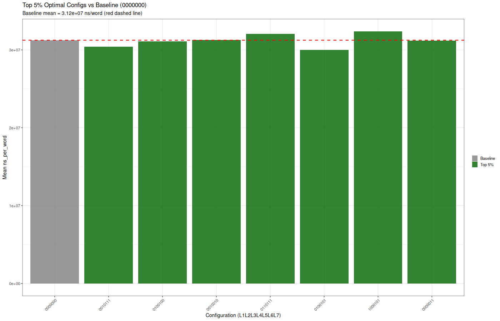

Generated: 2025-11-22 20:13:50.789377
Runs: 3840 | Configurations: 128 | Replicates: 30
Analysis of Variance Table
Response: ns_per_word
Df Sum Sq Mean Sq F value Pr(>F)
L1_heat_tracking 1 1.1066e+16 1.1066e+16 137.7718 < 2.2e-16 ***
L2_rolling_window 1 5.0304e+13 5.0304e+13 0.6263 0.4287789
L3_linear_decay 1 5.8253e+14 5.8253e+14 7.2523 0.0071122 **
L4_pipelining_metrics 1 2.9854e+17 2.9854e+17 3716.6761 < 2.2e-16 ***
L5_window_inference 1 1.1895e+15 1.1895e+15 14.8087 0.0001209 ***
L6_decay_inference 1 1.1406e+14 1.1406e+14 1.4200 0.2334811
L7_adaptive_heartrate 1 1.0177e+10 1.0177e+10 0.0001 0.9910196
replicate 29 2.8663e+15 9.8839e+13 1.2305 0.1841650
Residuals 3803 3.0547e+17 8.0324e+13
---
Signif. codes: 0 ‘***’ 0.001 ‘**’ 0.01 ‘*’ 0.05 ‘.’ 0.1 ‘ ’ 1
Analysis of Variance Table
Response: ns_per_word
Df Sum Sq Mean Sq
L1_heat_tracking 1 1.1066e+16 1.1066e+16
L2_rolling_window 1 5.0304e+13 5.0304e+13
L3_linear_decay 1 5.8253e+14 5.8253e+14
L4_pipelining_metrics 1 2.9854e+17 2.9854e+17
L5_window_inference 1 1.1895e+15 1.1895e+15
L6_decay_inference 1 1.1406e+14 1.1406e+14
L7_adaptive_heartrate 1 1.0177e+10 1.0177e+10
replicate 29 2.8663e+15 9.8839e+13
L1_heat_tracking:L2_rolling_window 1 3.3408e+13 3.3408e+13
L1_heat_tracking:L3_linear_decay 1 1.4585e+14 1.4585e+14
L1_heat_tracking:L4_pipelining_metrics 1 4.0907e+12 4.0907e+12
L1_heat_tracking:L5_window_inference 1 2.9834e+14 2.9834e+14
L1_heat_tracking:L6_decay_inference 1 2.1854e+14 2.1854e+14
L1_heat_tracking:L7_adaptive_heartrate 1 5.2887e+12 5.2887e+12
L2_rolling_window:L3_linear_decay 1 1.7790e+14 1.7790e+14
L2_rolling_window:L4_pipelining_metrics 1 1.2055e+12 1.2055e+12
L2_rolling_window:L5_window_inference 1 1.9734e+15 1.9734e+15
L2_rolling_window:L6_decay_inference 1 1.6022e+14 1.6022e+14
L2_rolling_window:L7_adaptive_heartrate 1 2.9312e+13 2.9312e+13
L3_linear_decay:L4_pipelining_metrics 1 1.4162e+14 1.4162e+14
L3_linear_decay:L5_window_inference 1 1.0690e+14 1.0690e+14
L3_linear_decay:L6_decay_inference 1 8.3390e+13 8.3390e+13
L3_linear_decay:L7_adaptive_heartrate 1 9.7626e+13 9.7626e+13
L4_pipelining_metrics:L5_window_inference 1 1.7568e+15 1.7568e+15
L4_pipelining_metrics:L6_decay_inference 1 1.0848e+13 1.0848e+13
L4_pipelining_metrics:L7_adaptive_heartrate 1 4.4680e+13 4.4680e+13
L5_window_inference:L6_decay_inference 1 5.3923e+14 5.3923e+14
L5_window_inference:L7_adaptive_heartrate 1 5.1947e+13 5.1947e+13
L6_decay_inference:L7_adaptive_heartrate 1 6.6361e+13 6.6361e+13
Residuals 3782 2.9952e+17 7.9197e+13
F value Pr(>F)
L1_heat_tracking 139.7313 < 2.2e-16 ***
L2_rolling_window 0.6352 0.4255153
L3_linear_decay 7.3554 0.0067163 **
L4_pipelining_metrics 3769.5378 < 2.2e-16 ***
L5_window_inference 15.0193 0.0001082 ***
L6_decay_inference 1.4402 0.2301860
L7_adaptive_heartrate 0.0001 0.9909559
replicate 1.2480 0.1692809
L1_heat_tracking:L2_rolling_window 0.4218 0.5160659
L1_heat_tracking:L3_linear_decay 1.8415 0.1748510
L1_heat_tracking:L4_pipelining_metrics 0.0517 0.8202253
L1_heat_tracking:L5_window_inference 3.7670 0.0523467 .
L1_heat_tracking:L6_decay_inference 2.7595 0.0967629 .
L1_heat_tracking:L7_adaptive_heartrate 0.0668 0.7960994
L2_rolling_window:L3_linear_decay 2.2462 0.1340234
L2_rolling_window:L4_pipelining_metrics 0.0152 0.9018169
L2_rolling_window:L5_window_inference 24.9173 6.254e-07 ***
L2_rolling_window:L6_decay_inference 2.0230 0.1550107
L2_rolling_window:L7_adaptive_heartrate 0.3701 0.5429767
L3_linear_decay:L4_pipelining_metrics 1.7882 0.1812295
L3_linear_decay:L5_window_inference 1.3498 0.2453881
L3_linear_decay:L6_decay_inference 1.0529 0.3048963
L3_linear_decay:L7_adaptive_heartrate 1.2327 0.2669549
L4_pipelining_metrics:L5_window_inference 22.1819 2.569e-06 ***
L4_pipelining_metrics:L6_decay_inference 0.1370 0.7113271
L4_pipelining_metrics:L7_adaptive_heartrate 0.5642 0.4526355
L5_window_inference:L6_decay_inference 6.8087 0.0091070 **
L5_window_inference:L7_adaptive_heartrate 0.6559 0.4180550
L6_decay_inference:L7_adaptive_heartrate 0.8379 0.3600511
Residuals
---
Signif. codes: 0 ‘***’ 0.001 ‘**’ 0.01 ‘*’ 0.05 ‘.’ 0.1 ‘ ’ 1
Full data: all_128_configurations.csv
The optimal performer is NOT just the fastest - it's the configuration that achieves both fast execution AND steady-state behavior, representing the true optimal dynamic system equilibrium.
Lower-left corner = Pareto-optimal (fast AND stable). Top 5% configs circled in red.
Green shaded region shows the top 5% of configurations by optimality score.
Component scores for each top 5% config: Speed, Stability, and Overall.
Which feedback loops are over/under-represented in optimal configurations?
# A tibble: 7 × 5 config_bits mean_ns cv_pct optimality_score optimality_percentile <chr> <dbl> <dbl> <dbl> <dbl> 1 0010111 30405972. 11.5 0.0250 100 2 0100100 31102185. 10.6 0.0350 99.2 3 0010010 31274913. 12.0 0.0536 98.4 4 0110111 32061519. 11.4 0.0684 97.7 5 0100101 30014036. 13.7 0.0780 96.9 6 1000101 32362147. 12.0 0.0835 96.1 7 0000011 31200840. 13.8 0.0891 95.3
Full ranking: optimal_configurations_ranked.csv
Baseline config (0000000): mean = 3.12e+07 ns/word, CV = 15.12%

config_bits mean_ns speedup_vs_baseline cv_pct cv_improvement
t...1 0010111 30405972 2.6819429 11.48879 3.634692
t...2 0100100 31102185 0.4536279 10.63719 4.486293
t...3 0010010 31274913 -0.0992112 12.02128 3.102206
t...4 0110111 32061519 -2.6168398 11.36135 3.762131
t...5 0100101 30014036 3.9363812 13.72019 1.403293
t...6 1000101 32362147 -3.5790364 12.03950 3.083985
t...7 0000011 31200840 0.1378692 13.81743 1.306052
t_pvalue t_significant
t...1 0.4382246 FALSE
t...2 0.8934640 FALSE
t...3 0.9776704 FALSE
t...4 0.4561293 FALSE
t...5 0.2870176 FALSE
t...6 0.3215805 FALSE
t...7 0.9707036 FALSE
Full comparison: top5pct_vs_baseline.csv

ANOVA results: interaction_anova_results.csv

# A tibble: 59 × 5 metric n n_na n_nan na_prop <chr> <int> <int> <int> <dbl> 1 L1_heat 3840 0 0 0 2 L2_window 3840 0 0 0 3 L3_decay 3840 0 0 0 4 L4_pipeline 3840 0 0 0 5 L5_win_inf 3840 0 0 0 6 L6_decay_inf 3840 0 0 0 7 L7_heartrate 3840 0 0 0 8 total_lookups 3840 0 0 0 9 cache_hits 3840 0 0 0 10 cache_hit_pct 3840 0 0 0 # ℹ 49 more rows